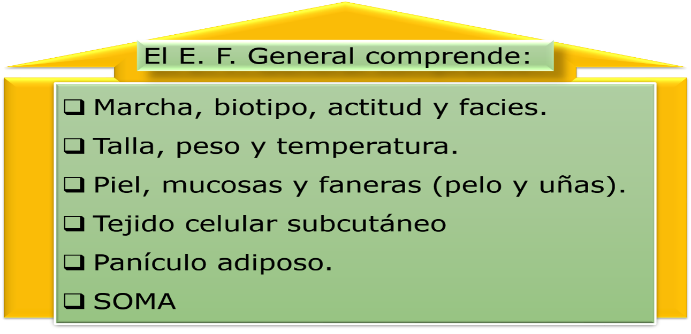
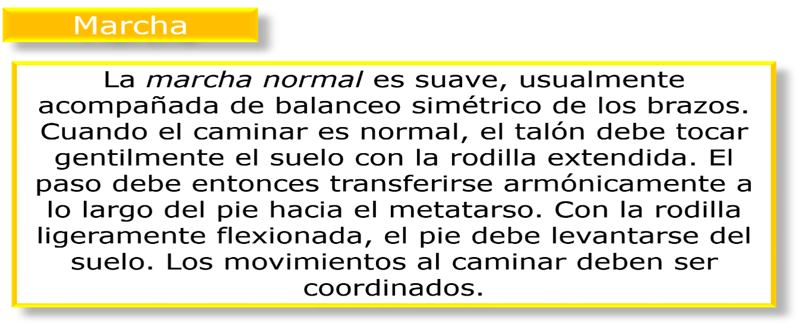
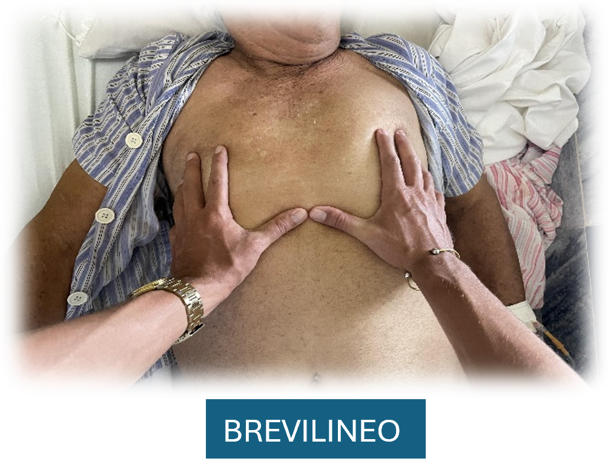
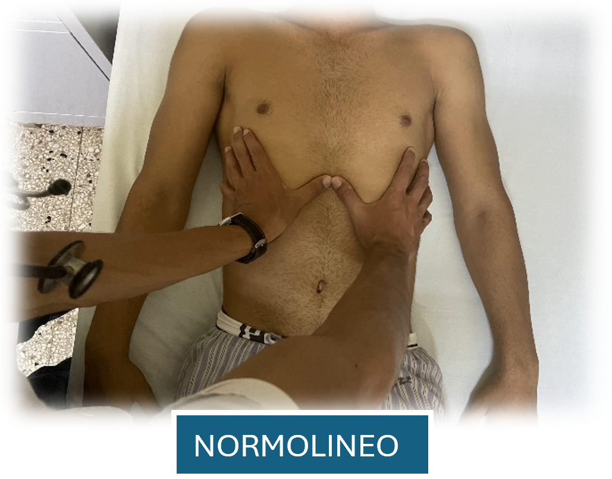
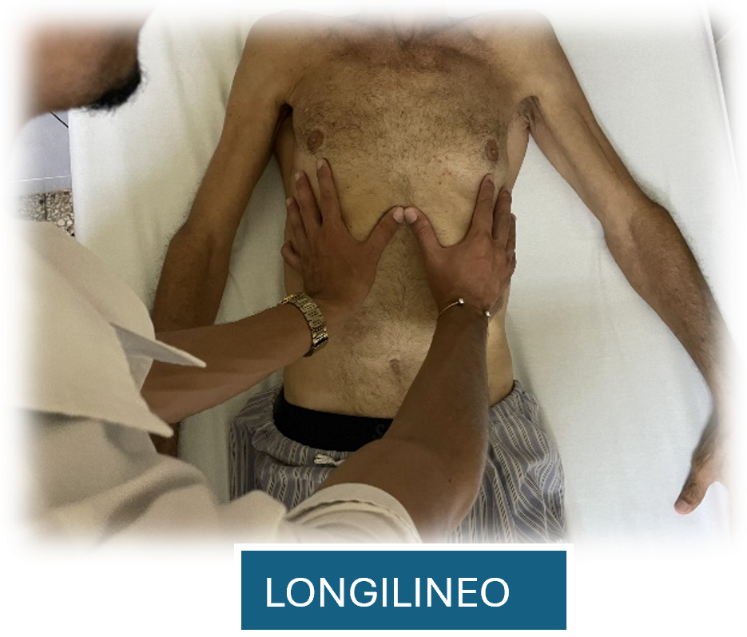
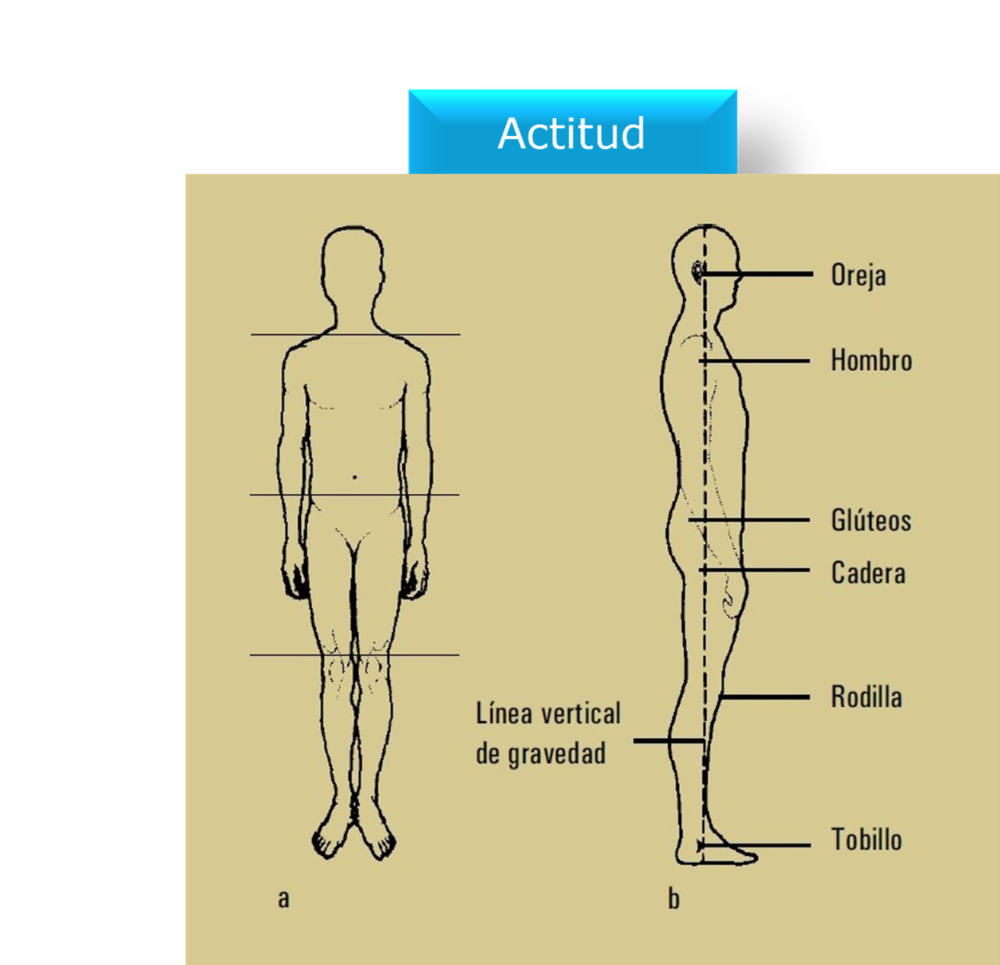
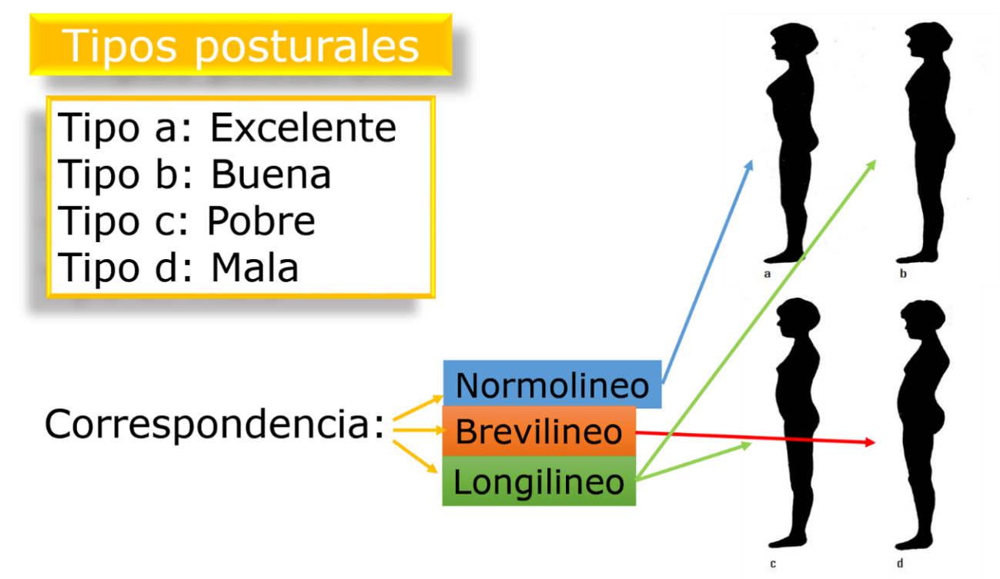
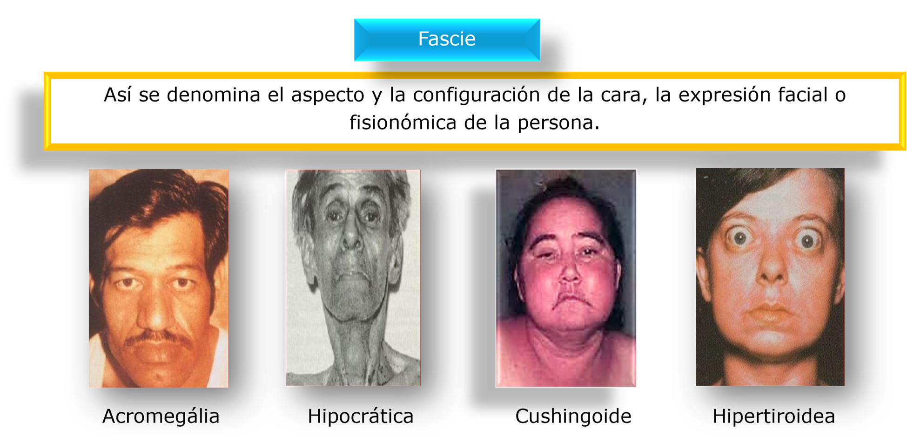
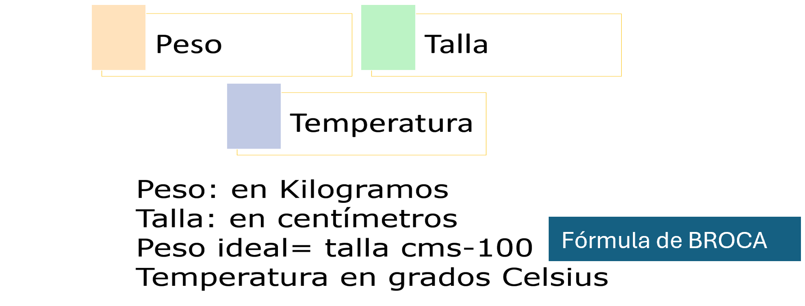

Módulo 5: Examen físico General (Primera Parte)
Escena 1: Generalidades y Marcha
Objetivo: Observar la manera de caminar del sujeto.


Objetivo: Observar la manera de caminar del sujeto.


Objetivo: Observar el biotipo del sujeto.



🎬 Video: Evaluación del biotipo
Objetivo: Observar la actitud del sujeto.


Objetivo: Observar la expresión de la cara.

Objetivo: Medir la talla du paciente.
